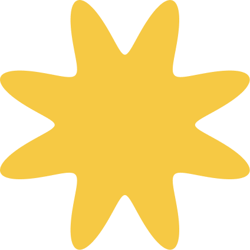
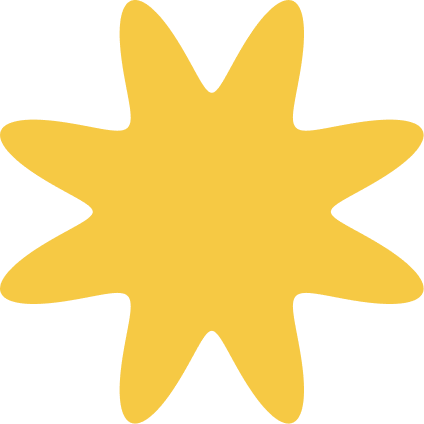
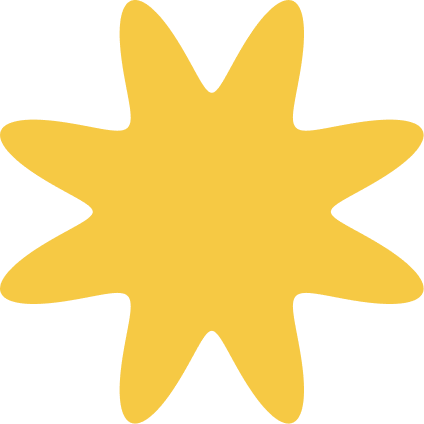

codebar is a global community
empowering minorities to break into tech.
Since 2013, codebar has created opportunities for minority group members to pursue a career in tech. Over a
span of 10 years, we have held more than 1,700 workshops and created a global community of over 19,000 students
and coaches.

In this impact report, we assess how our initiatives have made careers in tech more accessible for
minorities from
all over the world.
This is achieved through findings captured in a community-wide survey, which will drive
improvements in future
initiatives that further our cause.
Our work is an answer to the
diversity problem in tech.
Ethnic minorities make up only 15.2% of the tech labour market in the UK, while women are just
slightly above
that
at 25.5%1. Diversity is still a major issue in the tech industry despite being one of the world’s fastest
growing
fields.
Through our initiatives, we provide education, training and networking opportunities for members
of
underrepresented groups in tech. We believe in the strength that diversity brings and the importance of diverse
thinking in an industry where innovation is a constant.
 
